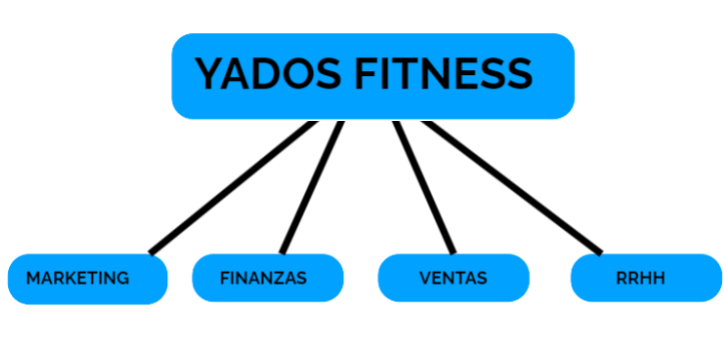
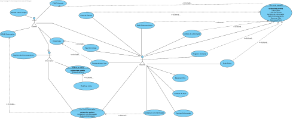
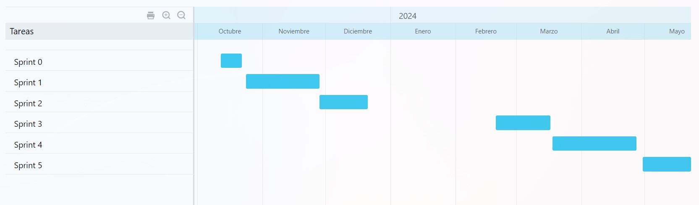
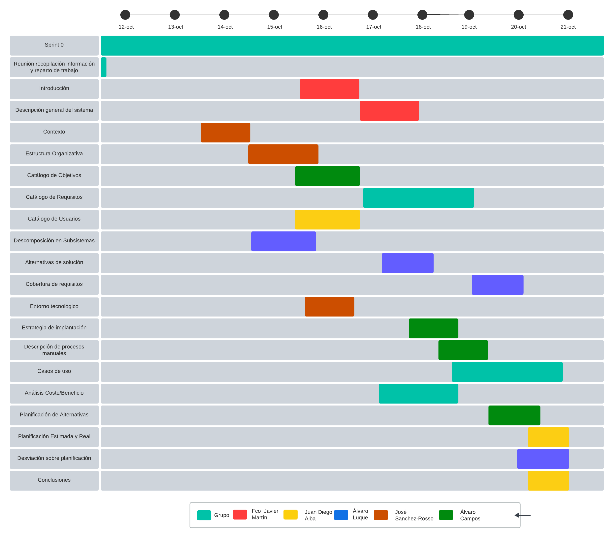

| Ciklum for Lifefit Sprint 0 |
|
|
| Yados Fitness |
| Alvaro Luque, Juan Diego, Alvaro Campos, Javier Martin, José Sánchez-Rosso |
|
|
|
|
|
Introducción Yados Fitness
Hoy en día, la industria del fitness y los gimnasios se ha vuelto más competitiva que nunca. Esto se debe principalmente al auge del gimnasio entre los más jóvenes. Cada vez más adolescentes están dejando de lado su vida sedentaria para adentrarse en este mundo.
Problema a resolver:
El problema que se nos presenta, consiste en que el usuario requiere de una mejor comunicación y necesita una fuente también para informarse sobre cómo esclarecer sus objetivos en el mundo del fitness. Hemos estado viendo entre los usuarios de gimnasios, que una falta de información y contexto en el tema de las rutinas y dietas, pueden conllevar a unos peores resultados, y más tarde la pérdida del interés del fitness. Esto puede ser muy frustrante para el usuario.
Solución propuesta:
Nuestra solución ante este problema es desarrollar una aplicación móvil, conectada a Internet, que principalmente contenga los siguientes puntos más importantes de nuestra aplicación:
Descripción del trabajo desarrollado en esta entrega: En esta entrega principalmente, asentamos las bases de nuestra plataforma, entendemos el problema y buscamos una solución posible. Los apartados más importantes en esta entrega son:
|
||
|
|
Descripción general del sistema En esta sección, detallaremos los requisitos esenciales que nuestra aplicación debe cumplir para lograr con éxito los objetivos planteados. Estos requisitos servirán como la base para el desarrollo y la implementación de la aplicación, garantizando que cumpla con las expectativas de Yados Fitness y sus clientes. El objetivo principal de nuestra aplicación consiste en crear una comunicación entre el usuario y el entrenador personal. La aplicación contará con más herramientas para facilitar el objetivo del usuario y hacerle la vida más fácil. Una vez definido el objetivo de nuestra aplicación, ya podemos ir agregando funcionalidades que complementan el sistema. A continuación, describiremos los requisitos funcionales y no funcionales y de información: Requisitos funcionales:
El cliente puede registrar una nueva cuenta de usuario proporcionando su nombre, apellidos y número de teléfono o correo electrónico. También tendrán la opción de subir una foto de perfil.
Los clientes pueden eliminar la cuenta de un usuario, eliminándolo de la base de datos de la aplicación.
El cliente puede registrar a un entrenador en la aplicación, especificando, además de la información necesaria para los usuarios, su especialidad o especialidades y su horario disponible para programar clases.
El cliente da de baja la cuenta de un entrenador de la aplicación, eliminándolo de la base de datos del programa.
Los entrenadores pueden acceder a la aplicación, seleccionar un usuario, y diseñar planes de dieta personalizados con información detallada sobre los alimentos, calorías, día de la semana y tipo de comida
Los entrenadores tienen la posibilidad de cambiar las dietas del usuario según convenga para el beneficio del usuario. El usuario no puede modificar la dieta.
Con la aplicación iniciada, el usuario podrá contactar con su entrenador (ya habrá concertado con él un plan de entrenamiento previamente), mediante un chat propio de la aplicación, con opción de contactar también por llamada de voz o videollamada.
Los administradores de la aplicación podrán programar sesiones de entrenamiento grupal, especificando la disciplina, la ubicación y el límite de participantes.
Los usuarios podrán seleccionar y reservar horarios disponibles de entrenamiento con sus entrenadores asignados, y recibirán notificaciones y confirmaciones por correo electrónico.
Los entrenadores podrán registrar los entrenamientos de sus clientes, adjuntando archivos y especificando fechas.
Los usuarios podrán solicitar sesiones de entrenamiento con entrenadores disponibles en la aplicación y recibirán notificaciones por correo electrónico cuando se confirme la reserva
El usuario entra en la aplicación, le da al icono de su foto y le saldrá el planning personal de la semana, podrá consultar la dieta, ver actividades del gimnasio, sus datos de salud y fotos
El cliente tiene un apartado dentro de su perfil donde al pulsar sobre el icono de una cámara podrá subir una foto de su progreso, y se quedará guardada en un apartado de su perfil.
El usuario en el menú dando click en el apartado de metas, puede establecer metas diarias o semanales con recordatorios para las actividades propuestas por el entrenador.
El usuario pulsa sobre el botón de registro, una vez dentro puede pulsar en el botón de añadir, y puede poner el ejercicio con su descripción, también puede poner su peso corporal
El abre la aplicación, inicia sesión con su cuenta(suponiendo que la contraseña es correcta), accede a la aplicación le aparecerá un menú con las opciones disponibles, pinchara en ver perfil, le aparecerán las opciones disponibles, pulsará en cambiar plan, le aparecerá una lista con los planes disponibles, pinchará sobre el plan que desee y se le mostrará una ventana emergente de cambio confirmado y se le enviará un correo al usuario de confirmación.
El usuario tiene la opción de cambiar de entrenador por el motivo que sea, siempre y cuando haya otro entrenador disponible que cumpla los requisitos que solicite el usuario
El cliente accede a la aplicación, se mete en la sección de "Ligas" y pulsa sobre "Crear Liga". Posteriormente le aparecerá una nueva ventana con un formulario para rellenar los datos sobre la liga (nombre, descripción, fecha de inicio, fecha de cierre, premios y numero máximo de participantes). Una vez rellenado los datos, le da al botón de guardar cambios y una vez se actualice la base de datos, aparecerá en la sección de Ligas la nueva liga creada.
El usuario accede a la aplicación una vez iniciado sesión. Le da al botón de "Ligas" para acceder a la sección. Una vez dentro le aparecerán las ligas disponibles filtrado por la fecha de inicio. El usuario accede a la liga que desee desapuntarse pulsando sobre ella. Le aparecerá una ventana con los datos de la liga y al estar el usuario apuntado le aparecerá el botón de desapuntarse. Pulsará sobre el botón y le aparecerá una nueva ventana para que confirme que se quiere desapuntar.
El usuario accede a la aplicación una vez iniciada la sesión. Le da al botón de "Ligas" para acceder a la sección. Una vez dentro le aparecerá un listado de las ligas disponibles filtrado por la fecha de inicio. El usuario accede a la liga pulsando sobre ella. Le aparecerá una ventana con los datos sobre la liga. Para apuntarse a ella, pulsa sobre el botón de "Apuntarse" y le aparecerá una ventana de confirmación.
La aplicación necesita de conexión a internet para funcionar, así como para reservar la fecha de los entrenamientos y contactar con los entrenadores. Requisitos no funcionales:
La aplicación hará saltar notificaciones en el equipo del usuario que tenga instalada la aplicación, para alentar al usuario a usarla o a fijar entrenamientos, así como notificar, por ejemplo, cambios en el horario de sus entrenadores o la introducción de nuevas posibilidades de entrenamiento y dietas.
La aplicación necesita de conexión a internet para funcionar, así como para reservar la fecha de los entrenamientos y contactar con los entrenadores.
|
||
|
CONTEXTO
-Esta aplicación consiste en una aplicación para los gimnasios enfocada en que el cliente tenga un entrenador personal asignado, de está forma tendremos un mejor seguimiento de la persona a la que estamos entrenando, además de contar con las funcionalidades básicas que contiene una aplicación de gimnasio como puede ser los centros que contiene dicha empresa, actividades deportivas del centro, canal de comunicación como puede ser un telefóno de contacto, un perfil personal, indicadores de salud como el IMC o dietas asignadas.
-La aplicación de fitness que se ha mencionado tiene un enfoque verdaderamente global, diseñado para adaptarse a las necesidades y características de diferentes países. Esto es esencial para que sea una herramienta efectiva en todo el mundo, ya que las culturas, costumbres y leyes pueden variar significativamente de un lugar a otro.
En primer lugar, la consideración de la cultura y las costumbres locales es fundamental. Lo que es popular en términos de actividad física varía de una región a otra.Además, las leyes y regulaciones locales pueden afectar la operación de la aplicación. Por ejemplo, las leyes de privacidad de datos y las regulaciones de salud pueden variar de un país a otro. La aplicación debe estar en conformidad con todas las regulaciones relevantes en cada ubicación para evitar problemas legales y garantizar la confianza de los usuarios.
-El crecimiento significativo de la industria del fitness en los últimos años, como se menciona en las cifras de “Ihrsa", es un reflejo de la creciente conciencia de la importancia de la salud en la sociedad moderna. A medida que las personas comprenden mejor los beneficios del acondicionamiento físico para su bienestar, están dispuestas a invertir en él. Esto es especialmente cierto en el rango de edades de 15 a 44 años, donde se concentra una gran cantidad de personas interesadas en el fitness. Esta franja demográfica es la más activa en la búsqueda de soluciones de acondicionamiento físico.
-El envejecimiento de la población es otro factor que influye en la industria del fitness. La demanda de programas de acondicionamiento físico específicos para personas de edad avanzada ha aumentado considerablemente. Las personas mayores están buscando formas de mantenerse activas y saludables, y la aplicación puede desempeñar un papel crucial en ayudarles a lograr sus objetivos si se intenta hacer una aplicación fácil e intuitiva, ya que esta franja de edad es la menos acostumbrada a las innovaciones tecnológicas.
-La pandemia del 2020 también ha tenido un impacto importante en el mundo del fitness. La necesidad de distanciamiento social y el cierre de gimnasios forzaron a la industria a adaptarse rápidamente. Forzó a las comunicaciones en línea y las clases virtuales se convirtieron en una solución crucial, permitiendo que las personas puedan ejercitar el ejercicio físico desde la comodidad de sus hogares .La accesibilidad a través de programas de acondicionamiento físico en línea se ha mantenido a día de hoy y sigue siendo una parte esencial de este sector en la actualidad.
-Por último, la masiva urbanización de las ciudades ha llevado a un aumento en la demanda de gimnasios en áreas urbanas. Con una mayor densidad de población, hace que las personas no puedan precisar de tanto espacio para desarrollar actividades al aire libre, lo que hace que los gimnasios en las ciudades sean una opción conveniente para las personas que buscan mantenerse en forma.
En cuanto al contexto tecnológico de una empresa tendremos que estar dotados de una fuerte ciberseguridad debido a que cada vez es más frecuentes los ataques a las empresas, tener una buena infraestructura tecnológica que tenga capacidad de almacenamiento y procesamiento de datos, así también como la conectividad a estos datos.Por otra parte considerar el amplio rango de edades para tener una aplicación fácil e intuitiva debido a que las personas de edad avanzadas tienen más dificultades a la hora de manejarse con las nuevas tecnologías.Además de como hemos comentado anteriormente valorar las regulaciones de cada país en el ámbito tecnológico y por último tener en cuenta que cada vez más el cliente busca una buena atención y sencilla de hacer.
Por otro lado la gran importancia de los denominados “stakeholders”, aquellas personas grupos o entidades que participan en el proyecto de forma que pueden afectar o ser afectadas por las actividades, decisiones y resultados de la entidad en cuestión.De esta forma habrá que tener una buena comunicación, relación con ellos para minimizar riesgos potenciales, minimizar conflictos para así tener éxito a la hora de llevar a cabo la aplicación en nuestro caso serían gimnasios, empresas de nutrición que quieran colaborar, merchandising para entrenar, medios de comunicación para publicitarnos, nuestros proveedores…
-Por último precisamos de hacer un estudio completo de las aplicaciones de gimnasio del mercado, buscando destacar entre ellas para conseguir una buena captación de clientes, conseguir fidelizar al cliente intentando tener un trato personalizado con cada cliente ofreciendo planes competitivos y una buena cantidad de datos como hacer planning semanal, rellenar datos de pesaje semanales entre ellos con nuestra aplicación, intentando hacernos un hueco en este sector que está en constante crecimiento, viendo en que podemos diferenciarnos de la competencia para poder competir y sobresalir en cuanto al resto.
-Hemos analizado dos aplicaciones que serían:
|
||
|

-Marketing: este departamento consiste en intentar captar al mayor público por medio de las redes sociales, campañas publicitarias, promociones de temporada como el black friday, descuentos o ventajas, consiguiendo así la mayor captación de empresas que compren nuestra aplicación.En nuestro caso podría ser poner de oferta la aplicación por la compra de la aplicación para 2 centros un 15% de descuento o una funcionalidad personalizada para el centro.
-Finanzas: este departamento se va a encargar de llevar la financiación del proyecto además de la contabilidad para saber invertir el dinero en partes del proyecto de manera óptima minimizando los riesgos que se puedan ocasionar como consecuencia de una mala gestión o organización de partes del proyecto como puede ser a la hora de pedir un préstamo tener en cuenta la situación de la empresa, el interés o la capacidad del pago entre ellos.
-Ventas: este departamento se centrará en maximizar el nº de ventas, analizar los productos que están funcionando más en nuestro caso podría ser las funcionalidades que el usuario está usando más como por ejemplo “el plan premium en la que el entrenador se adapta a tus horarios”, constantemente obtienen datos de la época de ventas de la aplicación que temporada es mejor, la demostración de nuestro servicios a los clientes, el servicio de posventa al cliente, por último entre ellos el cumplimiento de objetivos como podría ser “vender a 100 empresas al año nuestro producto”.
-RRHH:este departamento se encarga de aceptar a las personas para la empresa, estudiando el perfil de las personales mediante su curriculum vitae, de forma que van seleccionando a las personas que encajan mejor en los perfiles que necesitamos para la empresa, administra el personal también vigila el cumplimiento legal y normativo.Por otro lado se encarga de que haya buen clima de trabajo para que los empleados cumplan con sus obligaciones dentro de la empresa en nuestro caso podría ser “aceptar un desarrollador bueno para programar con experiencia en aplicaciones para móviles” o también “ayudar a un empleado nuevo a saber cómo funciona la empresa y la forma en que trabajan”. |
||
|
Objetivos del proyecto
|
||


|
Catálogo de usuarios
Tras realizar una evaluación general sobre gimnasios, actividades deportivas y usuarios de entrenamientos personales, hemos observado que podemos dividir a los usuarios en varios rangos de edad. Estos rangos nos van a proporcionar una perspectiva muy valiosa para adaptar nuestra aplicación. El primer grupo de edades son los jóvenes de 15 a los 30 años, el segundo los adultos de 30 a 40 y el último incluye las personas mayores de 40 años.
El gimnasio y los deportes en general es algo que está muy de moda estos últimos años, cada vez ves más gente apuntarse a un gimnasio y es algo evidente que la mayoría de usuarios que aprovechan estos servicios pertenecen al primer rango de edad (15-30 años). Este grupo representa a los usuarios más jóvenes y apasionados por la actividad deportiva. Después de un análisis detenido, hemos concluido que este rango de edad será el que tenga una mayor presencia en nuestra aplicación. Sin embargo, aunque nuestro enfoque principal estará en este grupo, entendemos la importancia de no descuidar a los otros rangos de edad.
Nuestro objetivo es diseñar una aplicación atractiva y moderna que llame la atención de los usuarios más jóvenes, mientras que al mismo tiempo sea acogedora y cómoda para aquellos que se encuentran en los grupos de edad superior. Así crearemos una aplicación dinámica y estimulante para los jóvenes deportistas entusiastas y también amigable y fácil de usar para los mayores. |
||
|
Descomposición en subsistemas 1.Sistema de usuarios
2.Sistema de ejercicios
3.Sistema de análisis y seguimiento
5.Sistema de monetización
6.Sistema de entrenador
7. Sistema de Localización y Personalización:
8.Ligas
|
||
|
Alternativas de solución Creemos que es mejor elegir una aplicación móvil en lugar de una página web, ya que en primer lugar nos proporciona un acceso inmediato a los planes de entrenamiento, seguimiento de la dieta, entre otras funciones, esto también es importante porque al estar en un sitio público, como por ejemplo, un gimnasio, para consultar tus planes de ejercicios y nutrición en tiempo real. Además, las notificaciones permiten recordatorios de las sesiones de entrenamiento programadas, reuniones con entrenadores… , lo que aumenta la puntualidad y productividad. La interacción con entrenadores personales también se ve facilitada a través de funciones de mensajería y videollamadas en la aplicación móvil, lo que permite a los usuarios comunicarse de manera efectiva con sus entrenadores, incluso cuando no están físicamente en el gimnasio. Esto crea una experiencia más personal y cercana para los usuarios, lo que puede mejorar su compromiso y satisfacción. Además, una aplicación móvil puede permitir a los usuarios acceder a su contenido y funciones en modo sin conexión, lo que es importante en sitios con conectividad limitada, como algunos gimnasios. |
||
|
Requisitos cubiertos: -Registro de usuarios: Permite a los usuarios crear y registrarte con tu cuenta de forma segura. -Gestión de perfil: Pueden editar y actualizar su perfil y ver todos tus datos personales. -Seguimiento de progreso: La aplicación permite a los usuarios observar sus valores de salud periódicamente, además de ver todos sus registros de los entrenamientos. -Comunicación con entrenador: El usuario puede comunicarse con su entrenador a través de un chat privado y videollamadas. -Notificaciones: Permite el envío de notificaciones y recordatorios para sesiones de entrenamiento, comidas y citas programadas. -Sistema de liga: Los usuarios podrán competir entre ellos en un sistema de liga, para así conseguir una motivación extra. -Lista de tareas: El usuario puede tener una “agenda”, donde anotar metas u objetivos diarios o semanales con recordatorios. Requisitos no cubiertos: -Evaluación de salud: No podremos ver datos de salud en tiempo real, como el ritmo cardiaco, el oxígeno en sangre o el nivel de estrés. -Compatibilidad con web: Esta aplicación no está diseñada para tener compatibilidad con dispositivos no móviles, como apps de escritorio o web. -Integración con otras redes sociales: La app puede no estar diseñada para integrarse con redes sociales externas. |
||
|
ENTORNO TECNOLÓGICO
Los entornos tecnológicos que vamos a utilizar son los siguientes: -MySql para almacenar varios tipos de datos
-Servidor web que se encargará de este aspecto del que dependerá toda la seguridad de nuestra aplicación, controlará los inicios de sesión, las creaciones de nuevas cuentas y las consultas dentro de la página una vez iniciado sesión.
-Microsoft Office muy versátil que cuenta con hojas de cálculo, elaborar documentos, comunicarse con los clientes a través de videollamadas o por correo electrónico, para generar facturas de clientes, para contactar por gmail con los clientes, para automatizar tareas repetitivas o para hacer videoconferencias con los clientes.
-Visual Studio Code: un editor de código fuente altamente personalizable que se usará para programar la aplicación debido a su gran flexibilidad, su depuración integrada, un gran soporte para múltiples lenguajes de programación, su alto rendimiento y su amplia gama de extensiones.
-Java:ofrece ventajas como portabilidad, seguridad, versatilidad y un sólido ecosistema de desarrollo, lo que lo convierte en una elección sólida para una amplia gama de proyectos de software.
-Angular:ofrece ventajas como un sólido marco de desarrollo front-end, soporte de TypeScript, una estructura de componentes reutilizables, rendimiento eficiente y el respaldo de Google, lo que lo convierte en una opción atractiva para crear aplicaciones web modernas y dinámicas. -Visual Paradigm: usado para el proceso de diseño de documentación, gestión de sistema de software es muy visual fácil e intuitivo, en nuestro caso para toda la documentación, generar casos de uso, diagramas de secuencia entre ellos.
-Whatsapp: comunicación de mensajería instantánea, que se usará para la atención al cliente o para la difusión de información.
-Taiga:página web online usada para organizar el proyecto, el seguimiento de tareas, para planificación del grupo y para la coordinación de los integrantes. |
||
|
Estrategia de Implantación 1. Introducción 1.1 Objetivo de la Estrategia de Implantación Esta estrategia tiene como objetivo guiar la implementación de la aplicación móvil, que permitirá a los usuarios crear cuentas personales para acceder al servicio. 2. Planificación de la Implantación 2.1 Enfoque Iterativo Dado el componente de registro y acceso mediante cuentas personales, se utilizará un enfoque iterativo que permita ajustes a medida que se definan los detalles. 3. Preparación 3.1 Capacitación del Personal de la Empresa Se llevará a cabo una capacitación detallada para el personal de la empresa encargado de controlar el proceso de alta de cuentas de usuario. 3.2 Configuración Inicial del Sistema Se establecerán los parámetros iniciales del sistema para permitir el registro de cuentas de usuario. 4. Implementación 4.1 Fase de Alta de Usuarios Esta fase tendrá un enfoque especial en la integración y validación del proceso de registro de cuentas de usuario. 4.2 Pruebas de Acceso Se llevarán a cabo pruebas de acceso para asegurarse de que los usuarios puedan crear cuentas y acceder al servicio de manera efectiva. 5. Comunicación y Gestión de Riesgos 5.1 Comunicación con los Usuarios Se establecerá una comunicación clara con los usuarios sobre el proceso de registro y acceso a la aplicación. 5.2 Gestión de Riesgos Se identificarán los riesgos potenciales asociados con el proceso de alta de usuarios y se implementarán medidas para mitigarlos. 6. Evaluación Continua 6.1 Retroalimentación de los Usuarios Se solicitará retroalimentación a los usuarios sobre su experiencia de registro y acceso a la aplicación para realizar mejoras continuas. 7. Conclusiones Esta estrategia de implantación se centrará en el proceso de alta y acceso de usuarios para garantizar un despliegue exitoso de la aplicación móvil. |
||
|
También tendrán que iniciar sesión manualmente (al menos una vez) en cada dispositivo, tanto entrenadores como usuarios. Los usuarios tendrán que seleccionar manualmente las horas que desean reservar para sus entrenamientos, y también serán ellos mismos los que contacten con los entrenadores usando los canales de comunicación que ofrece la plataforma. Los entrenadores serán los que introduzcan manualmente las nuevas dietas de los usuarios, y también tendrán que modificar las existentes a mano. Tanto entrenadores como usuarios serán los que modifiquen datos en sus propios perfiles o actualicen sus fotos, etc. |
||
|  | ||
 14.1. Apuntarse Liga 14.1. Apuntarse Liga
|
||
| ID: UC19 | ||
 14.2. Cambio de entrenador 14.2. Cambio de entrenador
|
||
| ID: UC14 | ||
 14.3. Cambio de Plan 14.3. Cambio de Plan
|
||
| ID: UC15 | ||
 14.4. Cliente 14.4. Cliente
|
||
| ID: AC01 | ||
 14.5. Contactar con entrenador 14.5. Contactar con entrenador
|
||
| ID: UC06 | ||
 14.6. Crear Liga 14.6. Crear Liga
|
||
| ID: UC16 | ||
 14.7. CRUD Entrenador 14.7. CRUD Entrenador
|
||
| ID: UC02 | ||
 14.8. CRUD Usuario 14.8. CRUD Usuario
|
||
| ID: UC01 | ||
 14.9. Desapuntarse Liga 14.9. Desapuntarse Liga
|
||
| ID: UC20 | ||
 14.10. Entrenador 14.10. Entrenador
|
||
| ID: AC02 | ||
 14.11. Lista de Tareas 14.11. Lista de Tareas
|
||
| ID: UC13 | ||
 14.12. Modificar dieta 14.12. Modificar dieta
|
||
| ID: UC21 | ||
 14.13. Ofertar Clase Grupal 14.13. Ofertar Clase Grupal
|
||
| ID: UC04 | ||
 14.14. Pedir Entrenamiento 14.14. Pedir Entrenamiento
|
||
| ID: UC07 | ||
 14.15. Planificar Dieta 14.15. Planificar Dieta
|
||
| ID: UC03 | ||
 14.16. Puntuar Entrenador 14.16. Puntuar Entrenador
|
||
| ID: UC17 | ||
 14.17. Registro de Entrenamiento 14.17. Registro de Entrenamiento
|
||
| ID: UC08 | ||
 14.18. Registro Semanal 14.18. Registro Semanal
|
||
| ID: UC18 | ||
 14.19. Reservar Cita 14.19. Reservar Cita
|
||
| ID: UC05 | ||
 14.20. Subir Fotos 14.20. Subir Fotos
|
||
| ID: UC09 | ||
 14.21. Usuario 14.21. Usuario
|
||
| ID: AC03 | ||
 14.22. Ver Perfil Entrenador 14.22. Ver Perfil Entrenador
|
||
| ID: UC12 | ||
 14.23. Ver Perfil Usuario 14.23. Ver Perfil Usuario
|
||
| ID: UC10 | ||
|
Costes: Desarrollo de la Aplicación: Coste de desarrollo del software: 30,000 - 100,000 € Salarios y honorarios del equipo: 40,000 - 120,000 € Licencias y herramientas de desarrollo: 5,000 - 10,000 € Infraestructura: Servidores y almacenamiento: 10,000 - 30,000 € Mantenimiento y actualización: 5,000 - 15,000 € anuales Marketing y Ventas: Costes de marketing: 10,000 - 50,000 € (varía según estrategia) Salarios del equipo de ventas: 20,000 - 60,000 € Publicidad en línea y fuera de línea: 5,000 - 20,000 € Soporte y Mantenimiento: Personal de soporte y actualizaciones: 15,000 - 40,000 € anuales Beneficios: Ingresos de Ventas: Precio de venta por licencia: 500 - 2,000 € por gimnasio. Ingresos recurrentes por suscripciones: 20 - 100 € por gimnasio por mes. Retención de Clientes: Aumento del precio de licencia en base a la retención de clientes gracias a la aplicación. Expansión de Mercado: Coste de adquisición por cliente: 50 - 200 € por cliente (publicidad, promociones, etc.) Datos y Análisis: Utilización de datos para mejoras: Impacto indirecto en la retención y satisfacción del cliente. Ventajas Competitivas: Impacto a largo plazo en la captación de clientes y asociaciones estratégicas. Consideraciones adicionales: Riesgos y Contingencias: Fondos de contingencia: 10,000 - 30,000 € para hacer frente a contingencias inesperadas. Escalabilidad: Costos adicionales para mejorar la infraestructura a medida que aumenta la base de usuarios. Innovación y Adaptabilidad: Presupuesto para investigación y desarrollo continuo: 15,000 - 50,000 € anuales. |
||
|
 |
||
|
 |
||
|
Desviaciones sobre planificación En general no hemos tenido demasiadas desviaciones o complicaciones a la hora de realizar el primer sprint del proyecto, voy a comentar algunos problemas a continuación: -Cambios requisitos: Una vez hemos tenido cada vez más claros nuestros objetivos, hemos tenido que ir añadiendo cada vez más requisitos, además también nos hemos dado cuenta que algún requisito que era demasiado complejo era mejor dividirlo en más de un requisito. -Falta de tiempo: Debido a la inexperiencia y a la falta de compresión de las historias de usuario creemos que nos a retrasado un poco a la hora de desarrollar el proyecto, ya que hay algunas historias de usuario que no entendiamos bien al comienzo.
-Casos de usos: Es la parte que más tiempo nos ha llevado, ya que cada vez que vez que leiamos los requisitos, algunos eran un poco ambiguos o bastantes generales, y también cada vez no salían mas relaciones entre casos de uso. Creemos que a pesar de estas adversidades , son oportunidades para poder aprender y mejorar en futuros sprints. |
||
|
Conclusión: Tras realizar un repaso general al prototipo de proyecto que hemos presentado, desde Yados Fitness creemos firmemente en la prometedora trayectoria que nos espera. Estamos convencidos de que nuestra aplicación representa una oportunidad excepcional en el mercado. No solo incorpora las características esenciales de una aplicación dedicada al entrenamiento personal, sino que también presenta funcionalidades únicas y atractivas que capturan la atención de los usuarios. |
||